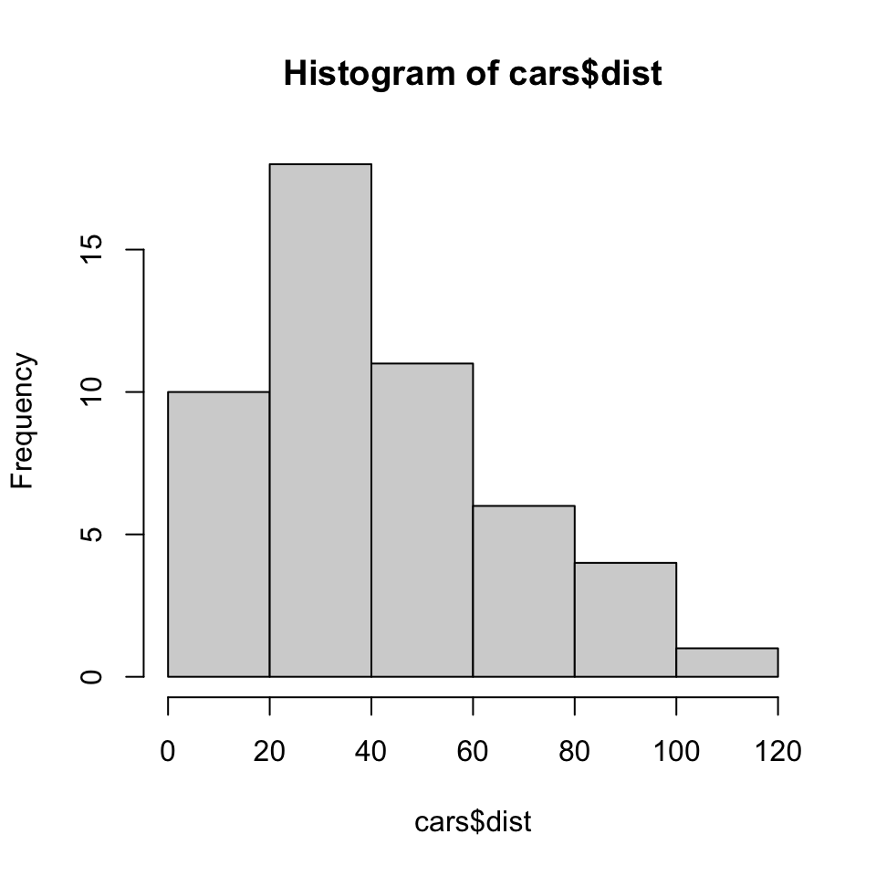
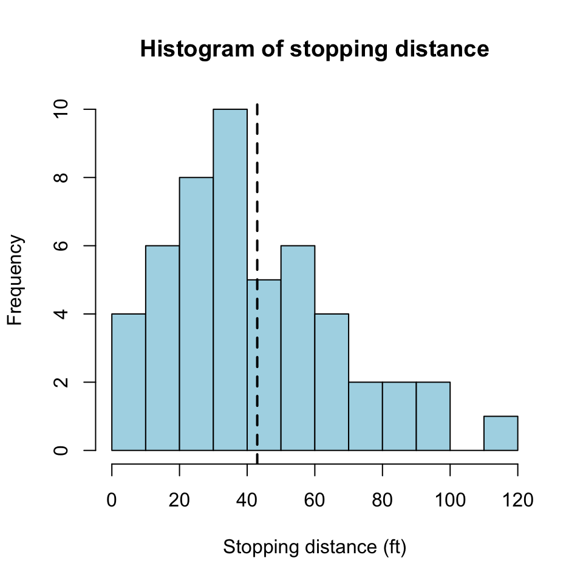
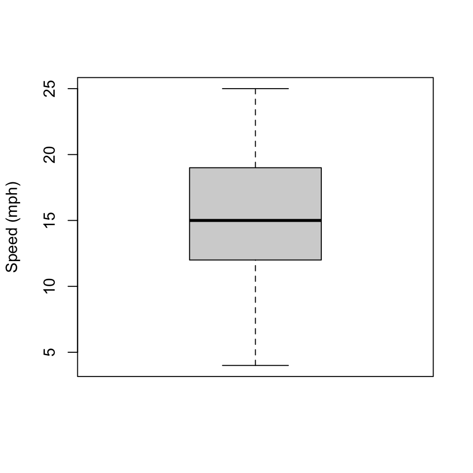
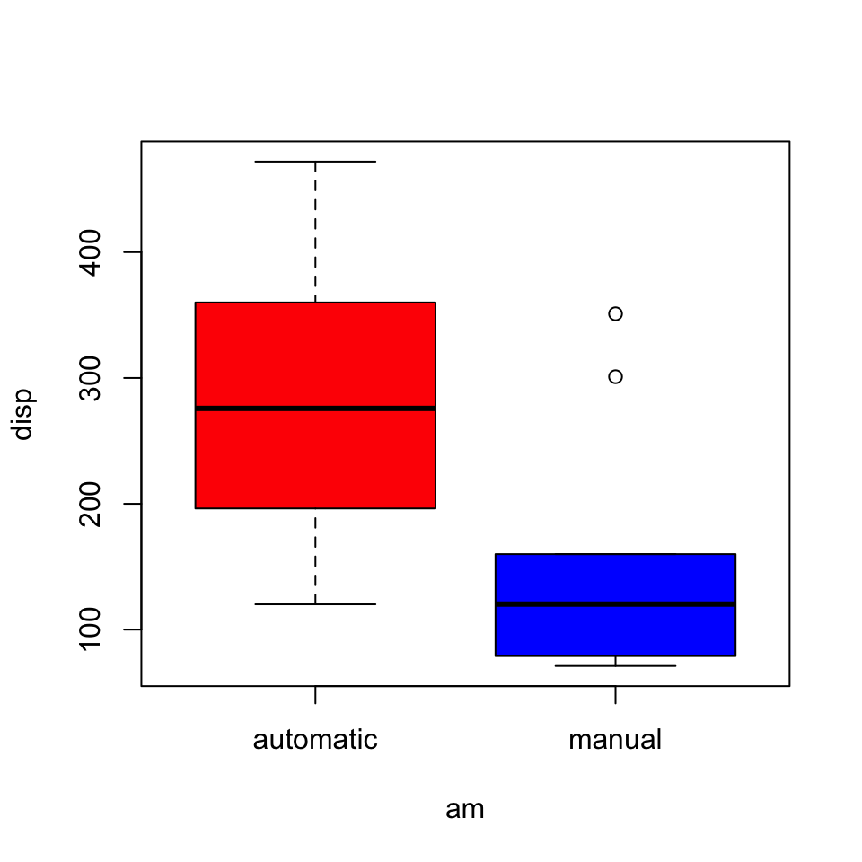
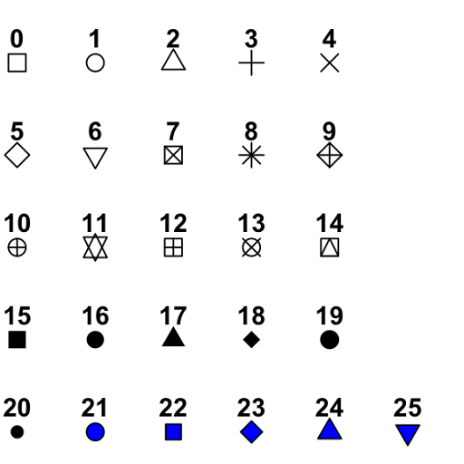
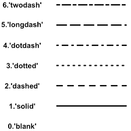
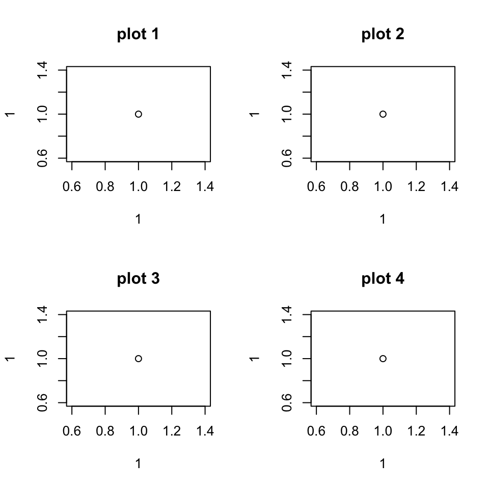
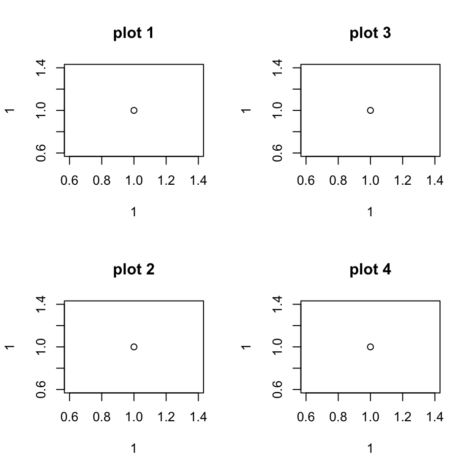
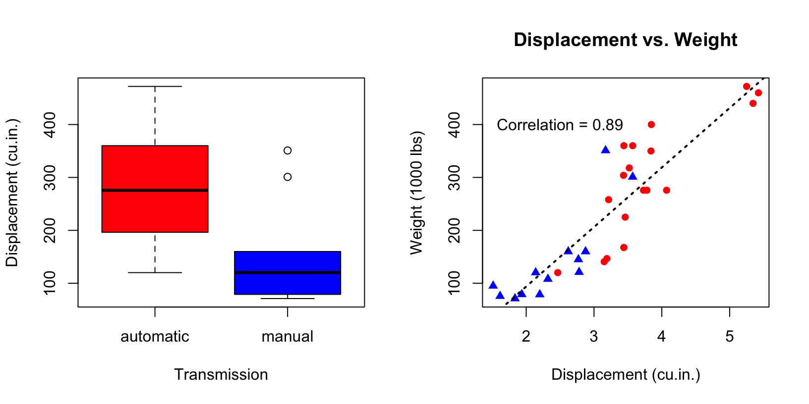

Welcome! In this learnR tutorial, you will be introduced to programming basics in R.
The topics covered in this section are shown on the left hand side of this page. You can navigate your way through by clicking on the topic you want to complete, or you can work through the sections sequentially. You can click “next topic” below to move to the first topic.
Tip: If you are viewing this in a pop-up browser from RStudio, click  in the top left-hand corner for the best experience!
in the top left-hand corner for the best experience!
Assigning values to objects
- You can create new objects and assign them values by typing
<-. - All R statements where you create objects, called assignment statements, have the same form:
object_name <- value
object_name # print object_name to screen by running the name of the objectWe will start by creating an object and assigning it a numeric value. Try the following exercise.
Exercise:
- Create a variable
xand store the number3in it, then printx. - After you have stored
3inx, store5inx, and printxagain.
# partial solution
x <- 3 # create a variable x and store 3 in it
x
# now, try the second part of the exercisex <- 3 # create a varaible x and store 3 in it
x
x <- 5 # this will overwrite the value stored in x and place a 5 in there
xYou could also use = to assign values to variables. Why use <- instead of =:
=is usually reserved for function arguments.<-more explicitly shows that variable assignment is being carried out (particularly when=is reserved for another purpose).
- The majority of the help you find online, on StackOverflow for example, will use
<-.
- If you prefer to use
=, be aware that there are some strange edge cases that you could be unlucky enough to come across (although I’ve rarely, if ever, encountered a problem).
Later, when you begin to use RStudio IDE, you can use the keyboard shortcut for <-:
- Alt + - on Windows.
- Option + - on Mac.
Exercise: Use the following quiz to test your knowledge and learn more about assignment statements.
# if you are unsure, or want to test your answer, you can type code in here# copy-paste and run the code for each question separately.
# modify the code if you need to know more.
# Q1
x <- 1
x + 3
# Q2
# try creating an object and assign it a value that is not numeric
different_value <- "abc"
different_value
# Q3
x <- 'first value'
X <- 'Does this overwrite x?'
print(x) # well... does it?
# Q4
x = 5 # just mixing `=` and `<-` to make the point that they do the same thing.
y <- 6 + 2 * x
y
# Q5
3 -> z
z
# use of statements like 3 -> z is not very conventional,
# even though it is possible, we will not use it in this course.
# pro tip for funky looking code
x <- 3 -> y
# assigns 3 to both x and y
# Again though, very unconventional and could cause confusion for soomebody reading your code
x <- y <- 3 # this is does the same and is much more readableVectors
Vectors are one-dimensional arrays which are fundamental for programming in R. In this section, we will learn about the basic types of vectors, and how they can be created and used.
Creating vectors
The c() function (read combine for c) is used to combine multiple values to make a vector.
For example, the command c(1, 2, 3, 4) combines the numbers 1 to 4 in a vector of type numeric.
Exercise: Using the c() function, create the following vectors:
v1containing numbers1,5,-11, and33.v2containing strings"Hello", and"world".v3containing logicalTRUE,TRUE, andFALSE.
v1 <- c(1, 5) # Combines the numbers 1 and 5 in a Numeric vector
v1
# modify it to include -11 and 33 also.v1 <- c(1, 5, -11, 33) # Combines Numeric vector, length 4
v1
v2 <- c("hello","world") # Character vector, length 2 (a vector of strings)
v2
v3 <- c(TRUE, TRUE, FALSE) # Logical vector, same as c(T, T, F)
v3Vector length
The length of a vector is the number of values (called elements) it contains. The length() function returns the length of a vector. For example, we can create a vector with 3 elements, 8, 9 and 10, and check its length.
my_vec <- c(8, 9, 10)
length(my_vec)## [1] 3Vector types
R defines different basic vector types based on the values they contain. The most important types of vector are logical, integer, double, and character. Later, we will learn about more data structures that are built on top of these basic types.
Watch this short video by RStudio Education to familiarise yourself with these four types.
In summary:
If the values are numbers, R recognises a vector as numeric. R will store the numbers in double-precision floating-point format, so you will see numeric vectors referred to as being of type double. E.g.,
c(1.1, -2, 3).If the values are strings, surrounded by quotation marks, R recognises a vector as a character. E.g.,
c("hello", "goodbye").integer vectors contain integer values, followed by a capital L. E.g.,
c(1L, 2L, 4L).logical vectors contain
TRUEandFALSE(andNA) values. E.g.,c(TRUE, FALSE).
We can use the typeof() function to find the basic type of a vector.
logical_vec <- c(TRUE, FALSE)
typeof(logical_vec)## [1] "logical"Exercise: Find out the type of v1, v2 and v3 (we have stored them for you in the background, so you don’t need to create them again).
typeof(v1)
typeof(v2)
typeof(v3)Combining vectors
One of the very few basic rules in R is that vectors must contain objects of the same type. Therefore, you can use c() to combine multiple vectors into a single vector, but this comes with a health warning. If you are not careful, it may result in type conversions. Type conversion (also referred to as typecasting) refers to changing an object of one type into another, which R can automatically do when we combine two vectors of different types.
Exercise:
- Use the
c()function to combinev4andv5and save in a new variable calledv6. - Check the type of
v6.
v4 <- c(1,2,3)
v5 <- 'This is a string'v4 <- c(1,2,3)
v5 <- 'This is a string'
v6 <- c(v4 , v5)
typeof(v6)To create the vector v6, R automatically converted the elements of v4 to character.
Subsetting vectors
Index subsetting
Often, we are only interested in specific values in a vector.
You can access a specific element of a vector by its index using the square brackets operator
[]. For example,v6[4], will return the fourth element ofv6(you can add this command to the exercise box above to check!).You can index multiple elements by supplying a vector of values that you wish to index a vector by. To index the first and last (fourth) value of
v6we can use the followingv6[c(1, 4)], which will return a (sub-)vector:"1" "This is a string".
Note that R indexes values starting from 1 rather than 0 (unlike Python or C).
Exercise: Access the second and third values of v1 (we have stored v1 from above for you, so you do not have to create it again).
v1[c(2, 3)]Subsetting named vectors
You can also have named vectors where each entry has a name. This can be useful for indexing (extracting) specific values from a vector without having to reference the position of the desired elements in the vector.
v2 <- c(first_word = "hello", second_word = "world")
v2 # print
v2["first_word"] # you can access values by names using square brackets and single or double quotation marks.Sequences
Creating Sequences
You will often have to create a vector containing a sequence of numbers. For example, you might need to generate ID numbers for a data set. There are many ways to generate a sequence in R. We will use two methods in this section.
Exercise: Create a vector v that contains the numbers 1 to 7 via the following:
Using the
:which will create a sequence (x:ywill generate a sequence fromxtoywith a spacing of1unit between values).Using the
seq()function. R has an extensive help function, run?seqto look up the documentation of how to use theseq. In particular, look to the arguments section to see what values you should pass to theseq()function.
# partial solution
v <- 1:7 # same as c(1,2,3,4,5,6,7)
v
# examine help file for seq function
?seq# full solution
v <- 1:7 # same as c(1,2,3,4,5,6,7)
v
v <- seq(from = 1, to = 7, by = 1)
vWe used the from = 1 argument to define the first term in the sequence, to = 7 to define the final term and by = 1 to define the increment (or step).
Instead of specifying the increment using the by argument, we could instead specify the number of terms in the sequence using the length.out argument.
Exercise:
Use
seq(), again specifying thebyargument, to generate a sequence from-10, to10, where the sequence increases in steps of2. Call itv_by.Calculate and store the length of the vector
v_by.Now that you know the length of
v_by, create the same sequence usingseq(), but specifylength.outinstead ofby. Call itv_outand compare it tov_by.
# partial solution
v_by <- seq(from = -10, to = 10, by = 2) # create sequence using by to specify step size
v_by
length_v_by <- length(v_by) # store the length of the vector
length_v_by
# ... now, need to to create the same sequence but using the length.out argument instead of by
# hint: `from` and `to` arguments stay the same# full solution
v_by <- seq(from = -10, to = 10, by = 2) # create sequence using by to specify step size
v_by
length_v_by <- length(v_by) # store the length of the vector
length_v_by
v_out <- seq(from = -10, to = 10, length.out = length_v_by) # creating a new sequence, specifying the length
# compare output:
v_by
v_outExtra: Replication
Another function that can be useful is the rep (short for replicate). Examine the help file to see how the rep function operates and complete the following exercise.
Exercise:
- create a vector that contains the string
"All work and no play makes Jack a dull boy"10 times. - create a vector that contains the sequence
1:3where the sequence is repeated 2 times. - create a vector that contains the sequence
1:3where each element is repeated 3 times.
# For the second and third parts of the exercise, you will need to specify either the `times` or `each` arguments. Can you guess which argument each task requires?
?rep# full solution
v <- rep("All work and no play makes Jacks a dull boy", 10)
v
v <- rep(1:3, times=2)
v
v <- rep(1:3, each=2)
vVector operations
You can use the normal mathematical operations between vectors. The typical arithmetic operators are catered for:
+(addition),-(subtraction),*(multiplication),/(division),^(powers).
Operations on vectors of the same length
Operations between vectors are performed element-wise. When vectors are of the same length, this is straightforward to understand. Investigate this in the following exercise.
Exercise:
Add
op_v1andop_v2together. Make sure you are happy that each element inop_v1was added to the corresponding element inop_v2.Divide
op_v1byop_v2and note the output.
op_v1 <- c(1, 5, -11, 33)
op_v2 <- c(5, 1.2, -11, 0)op_v1 <- c(1, 5, -11, 33)
op_v2 <- c(5, 1.2, -11, 0)
# 1
op_v1 + op_v2
# 2
op_v1/ op_v2Note: The fourth element of op_v1/ op_v2 returns Inf, because we are dividing the last element of op_v1 by 0.
Operations on vectors of different lengths
Now, what happens if we perform operations on vectors of different lengths?
The simplest case would be to perform an operation between a single numeric value (which is really just a vector of length 1) and a longer vector.
Complete the following exercise and, based on the results, answer the quiz questions:
Exercise:
Subtract the value
1fromop_v1.Add the vector
c(1, 2)toop_v2.
op_v1 <- c(1, 5, -11, 33)
op_v2 <- c(5, 1.2, -11, 0)op_v1 <- c(1, 5, -11, 33)
op_v2 <- c(5, 1.2, -11, 0)
# 1
op_v1 - 1 # subtract 1 from op_v1
# 2
c(1, 2) + op_v2 # add c(1, 2) to op_v2Also, all of the common arithmetic functions are available:
sqrt()(\(\sqrt{}\)),min()(minimum),max()(maximum),- and many, many more…
Functions such as sqrt(), which take a vector and operate on every element of the vector are called vectorised functions.
squares <- c(1, 4, 9, 16) # vector of first 4 square numbers
sqrt(squares) # apply sqrt to entire vector## [1] 1 2 3 4Important vector classes
We have already been introduced to the basic types of vectors in R. Built on top of these are some other classes of objects which will be important for our data analysis.
In the data sets we will analyse, the variables we encounter will typically belong to one of the following classes:
| class | description |
|---|---|
| numeric | Numeric data (approximations of the decimal numbers, -12.321, 0.1,34.7 etc) |
| integer | Integer data (whole numbers, -1,1231, -9765) |
| factor (unordered) | Categorical data (simple classifications, like sex) |
| factor (ordered) | Ordinal data (ordered classifications, like educational level) |
| character | Character data (strings) |
| logical | TRUE and FALSE |
The class() function returns the class of an object.
num_vec <- c(1, 2, 3)
class(num_vec)## [1] "numeric"char_vec <- c("hello", "how are you?")
class(char_vec)## [1] "character"truth_vec <- c(FALSE, TRUE, T, F)
class(truth_vec)## [1] "logical"Note: T and F are identical TRUE and FALSE in R. In this module, we prefer to use TRUE and FALSE for clarity.
Factors
We have encountered many of the classes in the above table already as basic vector types. However one important class of object in R which we are yet to learn about are factors.
Factors are designed to represent categorical data that can take a fixed set of possible values.
Why do we need factors?
Imagine that we have data that records answers to a survey question, where the possible responses are “yes”, “no” and “maybe”. Given what we have learned so far we would probably record the data as a character vector.
char1 <- c("yes", "no", "yes", "maybe")However, using a character vector to store this data has two problems.
- There are only three possible responses, but nothing saving you from typos.
char2 <- c("yes", "no", "yes", "naybe") # intentional typo- It only sorts alphabetically, which might not be the most useful way (maybe we would want it to be sorted in the order “no”, “maybe”, “yes”)
sort(char1)## [1] "maybe" "no" "yes" "yes"Both of these problems are fixed by using a factor variable.
To create the factor variable, we must create a vector containing the valid levels, in the order we want them to be sorted.
answer_levels <- c("no", "maybe", "yes")And then use the factor() function, with the first argument being the vector of data, and the second taking the levels we have specified.
fac1 <- factor(char1, levels = answer_levels)
class(fac1)## [1] "factor"fac1## [1] yes no yes maybe
## Levels: no maybe yesBecause we have specified the distinct values that our factor is allowed to take, any values not in this set (such as our intentional typo) will be silently converted to NA.
fac2 <- factor(char2, levels = answer_levels)
fac2## [1] yes no yes <NA>
## Levels: no maybe yesOur factor now sorts in the order we have specified.
sort(fac1)## [1] no maybe yes yes
## Levels: no maybe yesOrdered factors
Sometimes the levels of a factor variable in a data set have a natural ordering that we want R to recognise. We call these ordinal data, and record them as an ordered factor.
Consider data from a Likert scale.

Let’s create some fake data.
likert_data <- c("Very Satisfied", "Very Unsatisfied", "Neutral", "Very Unsatisfied","Satisfied") And a vector of valid levels.
likert_levels <- c("Very Unsatisfied", "Unsatisfied", "Neutral", "Satisfied", "Very Satisfied")We can create an ordered factor in two ways:
- Using
factor()and settingordered = TRUE.
likert_ordered <- factor(likert_data, levels = likert_levels, ordered = T)
likert_ordered## [1] Very Satisfied Very Unsatisfied Neutral Very Unsatisfied
## [5] Satisfied
## 5 Levels: Very Unsatisfied < Unsatisfied < Neutral < ... < Very Satisfied- Using
ordered().
likert_ordered <- ordered(likert_data, levels = likert_levels)
likert_ordered## [1] Very Satisfied Very Unsatisfied Neutral Very Unsatisfied
## [5] Satisfied
## 5 Levels: Very Unsatisfied < Unsatisfied < Neutral < ... < Very SatisfiedWhen printing the levels, R shows that they have a definite ordering using the < symbol. Other than this, you will not notice any differences from an unordered factor at first, but the ordering information can be useful later in statistical modelling.
Extra - factors
Watch the first 4 minutes and 30 seconds of Roger Peng’s video about factors in R. Then, test your knowledge about factors in the quiz.
# use this box to test your answers# partial solution
char1 <- c("yes", "no", "yes", "maybe")
answer_levels <- c("no", "maybe", "yes")
# Q2
fac1 <- factor(char1, levels = answer_levels) # create factor variable
# check basic type using `typeof()` or remove factor class to check basic type with `unclass()`
#Q3
fac2 <- factor(char1) # create factor, don't specify levels
# check ordering of levels using `levels()` function# full solution
char1 <- c("yes", "no", "yes", "maybe")
answer_levels <- c("no", "maybe", "yes")
# Q2
fac1 <- factor(char1, levels = answer_levels) # create factor variable
# check basic type using `typeof()` or remove factor class to check basic type with `unclass()`
typeof(fac1)
unclass(fac1)
#Q3
fac2 <- factor(char1) # create factor, don't specify levels
# check ordering of levels using `levels()` function
levels(fac2)
# Extra
# get levels in the order they appear in the data
unique_levels <- unique(char1)
# use these to specify levels
fac3 <- factor(char1, levels = unique_levels) Class testing and converting
You can easily test if a vector is of a certain class or convert a vector using the following functions:
| test | conversion |
|---|---|
| is.numeric | as.numeric |
| is.logical | as.logical |
| is.integer | as.integer |
| is.factor | as.factor |
| is.character | as.character |
| is.ordered | as.ordered |
Exercise:
Given the following vector x:
- Test if
xis a numeric variable. - Convert
xto numeric and save the results in variabley. - Examine
yand answer the quiz questions.
x <- c("7", "7*", "7.0", "7,0")x <- c("7", "7*", "7.0", "7,0")
is.numeric(x)
y <- as.numeric(x)
y
is.numeric(y)Special values
Like most programming languages, R has several special values that are exceptions to the normal variable types described in the previous section. These are NA, NaN, NULL and ±Inf.
NA
- Stands for not available.
NAis a placeholder for a missing value.- All basic operations in R handle
NAwithout crashing and mostly returnNAas an answer whenever one of the input arguments isNA. - The function
is.na()can be used to detectNAvariables.
NaN
NaNstands for not a number.- This is generally the result of a calculation whose result is unknown or undefined mathematically, but it is surely not a number. In particular, operations like
0/0,Inf-InfandInf/Infreturns anNaN. - Computations involving numbers and NaN always result in NaN.
- The function
is.nan()can be used to detectNaN’s.
NULL
NULLis similar to the empty set from mathematics.NULLis special since it has no class (its class isNULL) and has length0, so it does not take up any space in a vector.- The function
is.null()can be used to detect NULL variables.
Inf
- Stands for infinity and only applies to vectors of class numeric.
- A vector of class integer can never be
Inf. Infis a valid numeric that results from calculations like division of a number by zero.- Since
Infis numeric, operations betweenInfand a finite numeric are well-defined, and comparison operators work as expected. - the exception is
0/0which results inNaNsince it is not defined.
Exercise:
Complete the quiz below to test your knowledge of special values.
# use this box to test your answers# Q1
NA + 1
# Q2
sum(c(NA, 1, 2))
# Q3
sum(c(1, 2, NULL, 4))
# Q4
Inf == Inf
# Q5
log(-10)Logical operations
We can use the standard operators to compare vectors (and also data structures such as matrices, data.frames, tibbles, etc. which we will learn about later):
==(equality),!=(inequality, the!is read as “is not”),<(less than),>(greater than),<=(less than or equal to),>=(greater than or equal to).
These operations return logical (also called boolean values) which we have seen before: TRUE or FALSE.
The ! operation can be used in front of any boolean value to return the opposite boolean logical. For example:
!TRUEreturnsFALSE.!(x == 5)return all values of x that are not equal to 5 asTRUE.!is.na(x)returns all values of x that are not missing.
x <- c(10, 5, 5, 122)
x == 5 # checks which values of x are equal to 5
x != 5 # checks which values of x are not equal to 5
# or
!(x == 5)The | and & operators work on boolean values:
|is the OR operator (e.g.x | ywill returnTRUEif eitherxORyareTRUE).&is the AND operator (e.g.x & ywill returnTRUEif bothxANDyareTRUE).
When dealing with a boolean vector, say x the following functions are useful:
any(x)will returnTRUEif any of the values of the vector areTRUE.all()will returnTRUEif all of the values of the vector areTRUE.
Additionally, the %in% operator identifies the values from one vector which are present in another.
x <- c(1,2,3,11) # if we wanted to see which values of x
y <- c(-10:10) # are in y
x %in% y # we get TRUE for any values of x that are in y and FALSE for if they are not present.Exercise:
Given the vectors v1 and v2 run the following comparisons:
- Test if
v1is greater than2(should return values for each element). - Test
v1andv2for equality (should return values for each element). - Test for values of
v1that are greater than2OR values ofv2that are less than-3. - Test which values of
v1are in the vectorc(1:10)
v1 <- c(1, 5, -11, 33)
v2 <- c(1, 5.0, -11, 2)v1 <- c(1, 5, -11, 33)
v2 <- c(1, 5.0, -11, 2)
v1 > 2 # Each element is compared to 2, returns logical vector
v1 == v2 # Are corresponding elements equivalent? returns logical vector.
v1 != v2 # Are corresponding elements *not* equivalent? Same as !(v1==v2)
(v1 > 2) | (v2 < -3) # | is the boolean OR, returns a vector.
v1 %in% c(1:10) # returns a logical vector, indicating whether each element of v1 is contained in c(1:10)Subsetting vectors
Subsetting refers the use of indexing to accessing object elements. In this section, we will build on the indexing techniques for vectors which we have already seen, and combine them with the logical statements from the last section.
Introducing logical indexing
We have already looked at accessing values in a vector by specifying their position with [], called numerical indexing. Remember, v[1] will select the first value from the vector v. We have also seen how to access elements of a vector using their names.
Furthermore, it is possible to use negative indexing. When a negative number is used to index a vector, all values except for the value in that position are returned. For example, v[-1] will select everything except the first value from the vector v.
In this section, we will take another look at numerical indexing, and also introduce logical indexing, a powerful technique which uses logical statements that we learned about in the previous section to index vectors. The below code demonstrates different types of indexing. Feel free to change it and try to access different elements of v yourself!
# Create a vector
v <- c(1, 5, -11, 33)
# Numerical indexing:
v[c(1, 3)] # returns the first and third values of v using numerical indexing
# Negative indexing:
v[-c(2, 4)] # All other values that are not in position 2 and 4 will be returned
# Logical indexing:
v[c(TRUE, FALSE, TRUE, FALSE)] # does the same as above but with a logical vector
# How we would use logical indexing in practice:
logical_index <- v < 4 # v < 4 create a logical vector the same length as v,
# where it is TRUE if the element in its position in v is less than 4 and FALSE otherwise
logical_index # look at the vector
v[logical_index] # use the logical index to find the values of interestExercise:
Use indexing ([]) to select:
- The third element of
v. - The second to the fourth elements of
v. - The first and third elements of
vusing numerical and logical indexing. - All values in
vgreater than3using a logical statement.
Then, test your knowledge with the quiz questions.
v <- c(1, 5, -11, 33)v <- c(1, 5, -11, 33)
v[3] # third element of v1
v[2:4] # elements 2, 3, 4 of v1
v[c(1, 3)] # elements 1 and 3 - note that your indexes are a vector
v[c(TRUE, FALSE, TRUE, FALSE)] # elements 1 and 2 - only the ones that are TRUE
v[v>3] # Logical indexing: v>3 creates a logical vector used to indexData frames
Data frames are used to store tabular data in R - think of “rows as observations, columns as variables” - and are frequently used in statistical modeling applications.
Under the hood, a data frame is simply a list of equal-length vectors (we will cover lists in the next tutorial, the knowledge you have built up on vectors is sufficient for now). Each column of a data frame is a vector, and importantly these vectors may be of different classes (e.g., numeric, logical, factor).
The data.frame() function can be used to create a data frame. We pass vectors as arguments to create columns, each separated by a ,. We usually also supply column names.
Run the code below to get a feel for creating data frames, and try adding extra variables to it.
# create a data frame
your_first_df <- data.frame(
ID = 1:4, # create a variable (column) called ID
name = c("Stephen", "Aoife", "Pete", "Sarah"),
female = c(F, T, F, T), # add logical for 'female' variable
age = c(22, 33, 44, 55) # create a age varaible
)
# print
your_first_df# idea - we could add a height variable
your_second_df <- data.frame(
ID = 1:4, # create a variable (column) called ID
name = c("Stephen", "Aoife", "Pete", "Sarah"),
female = c(F, T, F, T), # add logical for 'female' variable
age = c(22, 33, 44, 55), # create a age varaible
height = c(170, 175, 186, 161) # height in cm
)
# print
your_second_dfTip: For large data frames, using head() or tail() to print only the first or last few rows is usually a better idea than printing the entire object.
The str() function provides a quick and easy way to understand the structure of your data frame.
str(your_first_df)## 'data.frame': 4 obs. of 4 variables:
## $ ID : int 1 2 3 4
## $ name : chr "Stephen" "Aoife" "Pete" "Sarah"
## $ female: logi FALSE TRUE FALSE TRUE
## $ age : num 22 33 44 55The number of rows and columns of the data.frame can accessed directly using ncol() and nrow().
ncol(your_first_df)## [1] 4nrow(your_first_df)## [1] 4The column names can be accessed using names() (or colnames()) and the row names using rownames().
names(your_first_df)## [1] "ID" "name" "female" "age"rownames(your_first_df)## [1] "1" "2" "3" "4"Both of these are attributes of the data frame object, and can be viewed together using attributes().
attributes(your_first_df)## $names
## [1] "ID" "name" "female" "age"
##
## $class
## [1] "data.frame"
##
## $row.names
## [1] 1 2 3 4Subsetting data frames
Subsetting data frames with indexing is similar to subsetting vectors vectors. However, as data frames are two dimensional, you have to specify the rows and columns of interest, again, using square brackets. For example your_first_df[rows_of_interest, cols_of_interest].
As columns are named vectors, you can also use named subsetting; as before with square brackets your_first_df[, "column_name"], or using the $ operator your_first_df$column_name. Some examples are given below.
Note: We have stored your_first_df in the background, so it doesn’t need to be created again.
- To obtain the first row, all columns
your_first_df[1, ] # return the first row
your_first_df[3, ] # return the third row- To obtain the first column, all rows
your_first_df[, 1] - To obtain the age column, all rows
your_first_df[, 'age']
# OR....
your_first_df$age # note the $ indexing - very useful
# OR...
your_first_df[, 4] # as the 4th column corresponds to age- To obtain the rows 1 and 2, columns 3 and 4 - the female and age
your_first_df[1:2, 3:4]
your_first_df[1:2, c('female', 'age')]- To obtain the rows 1 and 3, all columns
your_first_df[c(1, 3),]How would you obtain all rows with age greater than 30?
# access the age column and use it to
# perform logical indexing on the rows.
your_first_df[your_first_df$age>30, ]Quiz
# use this section to test your answersPlotting
The base R plotting system
Now that we have seen how tabular data can be constructed and stored in R, it is time to introduce the Base R Graphics System. These built in plotting methods in R allow data graphics to be created quickly and easily.
Creating data graphics with the Base R system typically consists of two steps:
Step 1. Calling a new plot. We use functions such as plot(x = vector_1, y = vector_2) to initialise a new scatterplot or hist(x = vector_1) to initialise a new histogram. Basically, this will will launch a graphics device (if one is not already open) and draw a new plot. In this section, we will learn about plot(), boxplot() and hist().
Step 2. Annotating the existing plot. We can add lines, points, text, titles and labels to a plot that is already drawn.
Data set
To practice plotting, we will use the cars data set. We do not need to create or read in this data set, it is stored within R as a data frame. The data give the speed of cars and the distances taken to stop. Run and add to the following code box to become familiar with the data set (tip: the help function ? works for built in data sets too).
?cars # use the help function to get information
str(cars) # look at structure
head(cars, n = 5) # look at first 5 rows
# or
# tail(cars, n = 5) # look at last 5 rowsHistogram
A simple histogram can be created using the hist() function.
hist(cars$dist)
We have passed the variable which we want to make a histogram of to hist() as a vector, but hist() has many other arguments, letting you set the title, x axis label, y axis label, colour etc.
Exercise: Use the help function to investigate the arguments of the hist() function, and try to recreate the following plot.

Tip: The dashed vertical line is at the mean value of cars$dist. Use the abline() function to annotate this line once after you have used the hist() function.
# hints:
# help on the histogram
?hist
# help on the vertical line
?abline
# and more information on graphical parameters such as line type
?par# full solution with explanation of arguments:
hist(x = cars$dist,
xlab = "Stopping distance (ft)", # xlab specifies the x axis label
main = "Histogram of stopping distance", # main is the main title of the plot
breaks = 12, # number of breaks for dividing the histogram into bins (try changing this and see what happens)
col = "lightblue") # color
# overlay straight line with
abline(v = mean(cars$dist), # v means a vertical line crossing the x axis at the point we supply
lwd = 2, # lwd := line width, we make it a bit thicker than usual (default is 1)
lty = 2) # lty = 2 gives dashed lines, we could have also used: lty = "dashed"
# note: lty can either be specified as an integer
#(0=blank, 1=solid (default), 2=dashed, 3=dotted, 4=dotdash, 5=longdash, 6=twodash)
# or as one of the character strings:
#"blank", "solid", "dashed", "dotted", "dotdash", "longdash", or "twodash".Boxplot
Boxplots can be created using the boxplot() function. We can pass a vector as the first argument.
boxplot(cars$speed, ylab = "Speed (mph)")
If we have a factor variable in our data set, then we can create a separate boxplot for each level by passing a formula as the first argument. A formula has form of y-axis ~ x-axis. Anytime you see a ~ in R, it’s a formula.
Look at this example on different data set about cars in R (the mtcars data set). We make a boxplot of disp (Displacement) by transmission, which allows us to compare between manual and automatic cars.
# factor is coded 1 and 0s, give it proper labels
mtcars$am <- factor(mtcars$am, levels = c(0, 1), labels = c("automatic", "manual"))
boxplot(formula = disp ~ am, data = mtcars, col = c("red", "blue"))
Note:
We did not have to type
mtcars$dispormtcars$amin the formula. Because we supplieddata = mtcars, R knows that we are referring to its column names in the argument.Because there are two boxplots (one for each type of transmission), we were able to supply a vector of color names:
col = c("red", "blue"). If we had supplied a single color, R would have recycled it and used it to color both boxes.
Scatterplot
Scatterplots can be made using the plot() function. Run the following code to create a scatterplot of the cars data set.
# run this code:
plot(x = cars$speed, y = cars$dist)
# alternatively use formula notation
# plot(dist ~ speed, data = cars)
# ^ gives the same plotEach point corresponds to a row in the cars data set. Its position along the x (horizontal) axis is determined by its speed, and its position along the y (vertical) axis is determined by its stopping distance. It can be seen that cars with a higher speed also tend to have a stopping distance.
While the default for a plot is points, there are a number of different options:
We set type = “p” for points, type = “l” for lines, type = “b” for both, type = “c” for the lines part alone of “b”, type = “o” for both “overplotted”, type = “h” for histogram like (or high-density) vertical lines, type = "s" and type = "S" for stair steps, and type = “n” for no plotting.

Plot annotation
Once we have created a plot, the second step is to annotate it. Some important annotation functions which can be used to add to existing plots are:
lines()adds lines to a plot.points()adds points to a plot.text()adds text labels to a plot, given x and y coordinates of where the labels should be placed.title()adds annotations to the title, subtitle and axis labels.abline()adds straight lines to the plot. We can supply the x intercept using the argumentvfor a straight vertical line, the y intercept usinghfor a straight horizontal line, or supply the intercept (a) and slope (b) of any line. Furthermore, if we estimate a trend line using thelm()function in R, we can pass the object we create directly toabline()and it will automatically overlay it on the plot.
Exercise: Work through the hints to see the evolution of a plot:
plot(dist ~ speed, data = cars, xlab = "Speed", ylab = "Stopping Distance")# Step 1: add title
plot(dist ~ speed, data = cars, xlab = "Speed", ylab = "Stopping Distance")
title(main = "Scatterplot of the cars data set")# Step 2: add trendline
# lm() estimates a resgression line and it uses formula notation
plot(dist ~ speed, data = cars, xlab = "Speed", ylab = "Stopping Distance")
title(main = "Scatterplot of the cars data set")
abline(lm(formula = dist ~ speed, data = cars), lty = 2, lwd = 2, col = "blue") # blue dashed trendline# Step 3 (final step): Annotate with a text label
# we position it at about x = 9 and y = 100
plot(dist ~ speed, data = cars, xlab = "Speed", ylab = "Stopping Distance")
title(main = "Scatterplot of the cars data set")
abline(lm(formula = dist ~ speed, data = cars), lty = 2, lwd = 2, col = "blue")
text(x = 9, y = 100, labels = "Stopping distance \n increases with speed!", cex = 1.2)
# cex = 1.2 increases the text size (default is 1).Important Parameters
Many base plotting functions (e.g., plot()) share a set of global parameters. Here are some important ones
pch: the plotting symbol (default is= 1for open circle), but there are many more options:

lty: the line type (default is= 1for solid line), can be dashed, dotted, etc.

lwd: the line width, specified as an integer multiple.col: the plotting color, specified as a number, string, or hex code; the colors() function gives you a vector of colors by name. Check out this guide of colors in R.xlabandylab: character strings for specifying the x- and y-axis labels
The par() function is used to specify the global graphics parameters that affect all plots in an R session. These parameters can be overridden when they are specified as arguments to specific plotting functions. If you want to learn more, run ?par.
Two important arguments are mfrow and mfcol. They allow us to put multiple plots side-by-side and stacked on one another. Both functions take a vector of two numbers as an argument, to specify the dimensions of a matrix-type grid for plotting. For example par(mfrow = c(2, 2)) and par(mcol = c(2, 2)) both set up \(2 \times 2\) grids for plotting, the only difference is that the grid is filled row-wise with mfrow and column-wise with mfcol.
par(mfrow = c(2, 2))
plot(x = 1, y = 1, main = "plot 1")
plot(x = 1, y = 1, main = "plot 2")
plot(x = 1, y = 1, main = "plot 3")
plot(x = 1, y = 1, main = "plot 4")
# and
par(mfcol = c(2, 2))
plot(x = 1, y = 1, main = "plot 1")
plot(x = 1, y = 1, main = "plot 2")
plot(x = 1, y = 1, main = "plot 3")
plot(x = 1, y = 1, main = "plot 4")
Typically, we will use mfrow() because we read and write by going from left to right first, but both functions are useful.
Test your knowledge
Exercise: Try to recreate the following plot of data from the the mtcars data set.

# factor is coded 1 and 0s, give it proper labels
mtcars$am <- factor(mtcars$am, levels = c(0, 1), labels = c("automatic", "manual")) # Hint 1: set up for side by side plotting
mtcars$am <- factor(mtcars$am, levels = c(0, 1), labels = c("automatic", "manual"))
par(mfrow = c(1, 2)) # create 2 x 1 layout for side-by side plotting # Hint 2: Add boxplot
mtcars$am <- factor(mtcars$am, levels = c(0, 1), labels = c("automatic", "manual"))
par(mfrow = c(1, 2))
boxplot(formula = disp ~ am, data = mtcars, col = c("red", "blue"),
ylab = "Displacement (cu.in.)", xlab = "Transmission")# Hint 3: Set up scatter plot
# use type = "n" to set up plot with no points
# we will next add red and blue points separately
mtcars$am <- factor(mtcars$am, levels = c(0, 1), labels = c("automatic", "manual"))
par(mfrow = c(1, 2))
boxplot(formula = disp ~ am, data = mtcars, col = c("red", "blue"),
ylab = "Displacement (cu.in.)", xlab = "Transmission")
plot(disp ~ wt, data = mtcars, type = "n",
xlab = "Displacement (cu.in.)", ylab = "Weight (1000 lbs)")# Hint 4: Add red and blue points
# we can plot a subset of points from our data
# by providing a logical statment in the subset
# argument.
mtcars$am <- factor(mtcars$am, levels = c(0, 1), labels = c("automatic", "manual"))
par(mfrow = c(1, 2))
boxplot(formula = disp ~ am, data = mtcars, col = c("red", "blue"),
ylab = "Displacement (cu.in.)", xlab = "Transmission")
plot(disp ~ wt, data = mtcars, type = "n",
xlab = "Displacement (cu.in.)", ylab = "Weight (1000 lbs)")
points(disp ~ wt, data = mtcars, subset = am == "automatic", # only am = automatic
pch = 16, col = "red") # red dots
points(disp ~ wt, data = mtcars, subset = am == "manual", # only manual = automatic
pch = 17, col = "blue") # blue triangles# Step 5:
# Estimate trendline using lm()
# and overlay it using abline()
mtcars$am <- factor(mtcars$am, levels = c(0, 1), labels = c("automatic", "manual"))
par(mfrow = c(1, 2))
boxplot(formula = disp ~ am, data = mtcars, col = c("red", "blue"),
ylab = "Displacement (cu.in.)", xlab = "Transmission")
plot(disp ~ wt, data = mtcars, type = "n",
xlab = "Displacement (cu.in.)", ylab = "Weight (1000 lbs)")
points(disp ~ wt, data = mtcars, subset = am == "automatic",
pch = 16, col = "red")
points(disp ~ wt, data = mtcars, subset = am == "manual",
pch = 17, col = "blue")
abline(lm(disp ~ wt, data = mtcars), lwd = 2, lty = 3)
correlation <- cor(mtcars$disp, mtcars$wt)
correlation <- round(correlation, 2)
correlation_string <- paste("Correlation =", correlation)
text(x = 2.5, y = 400, label = correlation_string)
title(main = "Displacement vs. Weight")# Step 6 :
# Calculate correlation coefficient using cor()
# and annotate it as text label
mtcars$am <- factor(mtcars$am, levels = c(0, 1), labels = c("automatic", "manual"))
par(mfrow = c(1, 2))
boxplot(formula = disp ~ am, data = mtcars, col = c("red", "blue"),
ylab = "Displacement (cu.in.)", xlab = "Transmission")
plot(disp ~ wt, data = mtcars, type = "n",
xlab = "Displacement (cu.in.)", ylab = "Weight (1000 lbs)")
points(disp ~ wt, data = mtcars, subset = am == "automatic",
pch = 16, col = "red")
points(disp ~ wt, data = mtcars, subset = am == "manual",
pch = 17, col = "blue")
abline(lm(disp ~ wt, data = mtcars), lwd = 2, lty = 3)
# correlation:
correlation <- cor(mtcars$disp, mtcars$wt) # calculates correlation
correlation <- round(correlation, digits = 2) # round to 2 decimal places
# paste it with some text to create character string
correlation_string <- paste("Correlation =", correlation)
# annotate string as text label
text(x = 2.5, y = 400, label = correlation_string)# Step 7 (last step):
# Add title
mtcars$am <- factor(mtcars$am, levels = c(0, 1), labels = c("automatic", "manual"))
par(mfrow = c(1, 2))
boxplot(formula = disp ~ am, data = mtcars, col = c("red", "blue"),
ylab = "Displacement (cu.in.)", xlab = "Transmission")
plot(disp ~ wt, data = mtcars, type = "n",
xlab = "Displacement (cu.in.)", ylab = "Weight (1000 lbs)")
points(disp ~ wt, data = mtcars, subset = am == "automatic",
pch = 16, col = "red")
points(disp ~ wt, data = mtcars, subset = am == "manual",
pch = 17, col = "blue")
abline(lm(disp ~ wt, data = mtcars), lwd = 2, lty = 3)
# correlation:
correlation <- cor(mtcars$disp, mtcars$wt) # calculates correlation
correlation <- round(correlation, digits = 2) # round to 2 decimal places
# paste it with some text to create character string
correlation_string <- paste("Correlation =", correlation)
# annotate string as text label
text(x = 2.5, y = 400, label = correlation_string)
title(main = "Displacement vs. Weight")